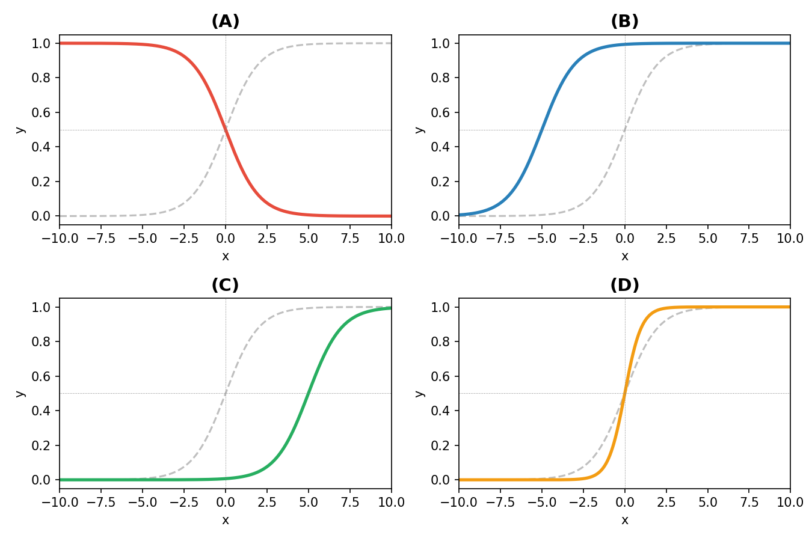

Quiz-10 (2026.04.08) // 범위: ~05wk
1. 시그모이드 함수의 변환
(1) \(f(x) = \text{sig}(x)\) 라 하자. 아래 그림에서 점선은 원래 함수 \(f(x)\)이고, 색이 있는 실선은 변환된 함수이다. 각 그래프 (A)~(D)에 해당하는 함수를 보기에서 골라 짝지으시오.

보기: \(f(x+5)\), \(f(x-5)\), \(f(2x)\), \(f(-x)\)
정답:
- (A) = \(f(-x)\) : 좌우 대칭 (감소함수로 바뀜)
- (B) = \(f(x+5)\) : 왼쪽으로 5만큼 이동
- (C) = \(f(x-5)\) : 오른쪽으로 5만큼 이동
- (D) = \(f(2x)\) : 기울기가 더 가파름 (수평 방향으로 압축)
(2) 시그모이드 함수 \(\text{sig}(x) = \frac{e^x}{e^x+1}\) 에 대하여 다음 중 옳은 것을 모두 고르시오.
(a) \(\text{sig}(0) = 0.5\)
(b) \(x \to \infty\) 이면 \(\text{sig}(x) \to 1\)
(c) \(x \to -\infty\) 이면 \(\text{sig}(x) \to -1\)
(d) 시그모이드 함수의 출력 범위는 \((0, 1)\) 이다.
정답: (a), (b), (d) // (c)는 \(\text{sig}(x) \to 0\) 이므로 틀렸음.
2. 로지스틱 모델
(1) 로지스틱 모델에서 데이터 생성 과정은 다음과 같다.
\[\pi_i^\ast = \frac{\exp(w_0^\ast + w_1^\ast x_i)}{1+\exp(w_0^\ast + w_1^\ast x_i)}, \quad y_i \sim Bernoulli(\pi_i^\ast)\]
다음 중 옳은 것을 모두 고르시오.
(a) \(\pi_i^\ast\) 의 범위는 \((0, 1)\) 이다.
(b) \(y_i\), \(\hat{y}_i\) 의 값은 \(0\) 또는 \(1\) 이다.
(c) \(\hat{y}_i = \text{sig}(\text{linr}(x_i))\) 로 표현할 수 있다.
(d) 회귀분석에서는 \(y_i\)가 정규분포를 따른다고 가정하지만 로지스틱에서는 \(y_i\)가 베르누이를 따른다고 가정한다.
정답: (a), (c), (d) // (b) \(\hat{y}_i\)의 값은 0과 1사이의 값이다.
(2) 다음은 로지스틱 모델의 데이터를 생성하는 코드이다. 빈칸 ???에 들어갈 코드를 고르시오.
torch.manual_seed(43052)
x = torch.linspace(-1, 1, 2000)
w0ast = -1
w1ast = 5
def sig(x):
return torch.exp(x) / (torch.exp(x) + 1)
piast = sig(w0ast + w1ast * x)
y = ???(a) torch.bernoulli(piast)
(b) torch.normal(piast, 0.5)
정답: (a) // 로지스틱 모델에서 \(y_i\)는 베르누이 분포를 따르므로 torch.bernoulli를 사용해야 함.
3. torch.nn.Sequential
(1) 다음 코드에서 net(X)와 같은 결과를 내는 것을 모두 고르시오.
linr = torch.nn.Linear(1, 1)
sig = torch.nn.Sigmoid()
net = torch.nn.Sequential(linr, sig)(a) sig(linr(X))
(b) linr(sig(X))
(c) net[1](net[0](X))
(d) net[0](net[1](X))
정답: (a), (c) // Sequential은 순서대로 linr → sig를 적용하므로 sig(linr(X))와 같음. (b), (d)는 순서가 반대임.
(2) A와 같은 효과를 가지게 하기 위해 B코드를 작성하였다. 하지만 B코드는 잘못되었다. B코드의 문제점은? (B코드의 문제점을 지적하거나, 올바르게 고친코드를 제시하면 정답으로 인정)
코드 A:
linr = torch.nn.Linear(1, 1)
sig = torch.nn.Sigmoid()
net = torch.nn.Sequential(linr, sig)
linr.weight.data = torch.tensor([[-0.3]])
linr.bias.data = torch.tensor([-0.8])코드 B:
net = torch.nn.Sequential(
torch.nn.Linear(1, 1),
torch.nn.Sigmoid()
)
net[1].weight.data = torch.tensor([[-0.3]])
net[1].bias.data = torch.tensor([-0.8])net[1]이 의미하는건 torch.nn.Sigmoid()이고, 여기에는 weight, bias와 같은 파라메터가 없다.
net[0].weight.data = torch.tensor([[-0.3]])
net[0].bias.data = torch.tensor([-0.8])4. 로지스틱 모델링
(1) 05wk 강의에서 (spec, employed) 데이터를 시뮬레이션으로 만드는 두 가지 방식을 소개하였다.
방식1:
_employed = (1.2*spec + torch.randn(2000)*0.3 > 0).float()방식2:
u = spec*8
v = sig(u)
_employed = torch.bernoulli(v)강의에서 방식2를 채택하였다. 방식1 대신 방식2를 사용하는 이유를 서술하시오.
데이터를 표현하는 측면에서는 방식1이나 방식2나 비슷하게 유리하다. 다만 방식1은 학습할 파라메터가 방식2보다 더 많고 (정규분포의 분산도 최적화해야하므로)
방식2는 시그모이드 + BCELoss 조합으로 학습할 수 있어 손실함수가 convex에 가까워 경사하강법으로 학습하기에 유리하다. 또한 \(\log\frac{\pi^\ast}{1-\pi^\ast} = w_0^\ast + w_1^\ast x_i\) 와 같이 오즈(odds)의 해석이 가능하여 의미적으로도 장점이 있다.
(2) 다음은 로지스틱 모델을 학습하는 코드이다. 이 코드의 문제점을 서술하시오.
for epoch in range(100):
prob = sig(linr(X1))
loss = torch.mean((prob-Y)**2)
loss.backward()
linr.weight.data = linr.weight.data - 0.25 * linr.weight.grad
linr.bias.data = linr.bias.data - 0.25 * linr.bias.grad
linr.weight.grad = None
linr.bias.grad = NoneMSELoss를 손실함수로 사용하고 있다. 로지스틱 모델에서 MSELoss를 사용하면 손실함수가 아래로 볼록(convex)하지 않아서 초기값에 따라 학습이 잘 안 되거나 느려질 수 있다. BCELoss를 사용하면 손실함수가 convex에 가까워져 같은 epoch 수에서도 훨씬 더 잘 학습된다.
5. 똑같은 코드 찾기 (\(\star\))
# 데이터
torch.manual_seed(43052)
x = torch.linspace(-1, 1, 2000)
w0ast = -1
w1ast = 5
def sig(x):
return torch.exp(x) / (torch.exp(x) + 1)
piast = sig(w0ast + w1ast * x)
y = torch.bernoulli(piast)
X = x.reshape(-1, 1)
Y = y.reshape(-1, 1)
# 기준코드 (원래코드)
linr = torch.nn.Linear(in_features=1, out_features=1)
linr.weight.data = torch.tensor([[-0.3]])
linr.bias.data = torch.tensor([-0.8])
def sig(x):
return torch.exp(x) / (torch.exp(x) + 1)
for epoch in range(5000):
# step1
Yhat = sig(linr(X))
# step2
loss = -torch.mean(Y*torch.log(Yhat) + (1-Y)*torch.log(1-Yhat))
# step3
loss.backward()
# step4
linr.weight.data = linr.weight.data - 0.25 * linr.weight.grad
linr.bias.data = linr.bias.data - 0.25 * linr.bias.grad
linr.weight.grad = None
linr.bias.grad = None아래 각 문항의 코드가 위의 기준코드와 같은 결과를 출력하도록 물음표(???)를 채우시오.
(1) – hint: 직접 정의한 sig 함수를 torch.nn.Sigmoid()로 교체
linr = torch.nn.Linear(in_features=1, out_features=1)
linr.weight.data = torch.tensor([[-0.3]])
linr.bias.data = torch.tensor([-0.8])
sig = ???
for epoch in range(5000):
# step1
Yhat = sig(linr(X))
# step2
loss = -torch.mean(Y*torch.log(Yhat) + (1-Y)*torch.log(1-Yhat))
# step3
loss.backward()
# step4
linr.weight.data = linr.weight.data - 0.25 * linr.weight.grad
linr.bias.data = linr.bias.data - 0.25 * linr.bias.grad
linr.weight.grad = None
linr.bias.grad = Nonesig = torch.nn.Sigmoid()(2) – hint: BCELoss 수식을 loss_fn으로 교체
linr = torch.nn.Linear(in_features=1, out_features=1)
linr.weight.data = torch.tensor([[-0.3]])
linr.bias.data = torch.tensor([-0.8])
sig = torch.nn.Sigmoid()
loss_fn = ???
for epoch in range(5000):
# step1
Yhat = sig(linr(X))
# step2
loss = ???
# step3
loss.backward()
# step4
linr.weight.data = linr.weight.data - 0.25 * linr.weight.grad
linr.bias.data = linr.bias.data - 0.25 * linr.bias.grad
linr.weight.grad = None
linr.bias.grad = Noneloss_fn = torch.nn.BCELoss()
loss = loss_fn(Yhat, Y)(3) – hint: optimizer를 도입하여 수동 업데이트 + grad 초기화를 대체
linr = torch.nn.Linear(in_features=1, out_features=1)
linr.weight.data = torch.tensor([[-0.3]])
linr.bias.data = torch.tensor([-0.8])
sig = torch.nn.Sigmoid()
loss_fn = torch.nn.BCELoss()
optimizer = ???
for epoch in range(5000):
# step1
Yhat = sig(linr(X))
# step2
loss = loss_fn(Yhat, Y)
# step3
loss.backward()
# step4
???
???optimizer = torch.optim.SGD(linr.parameters(), lr=0.25)
# for문 안:
optimizer.step()
optimizer.zero_grad()(4) – hint: sig(linr(X))를 net(X)로 바꾸기 위해 torch.nn.Sequential 사용
net = torch.nn.Sequential(
???,
???
)
??? = torch.tensor([[-0.3]])
??? = torch.tensor([-0.8])
loss_fn = torch.nn.BCELoss()
optimizer = torch.optim.SGD(???, lr=0.25)
for epoch in range(5000):
## step1
Yhat = net(X)
## step2
loss = loss_fn(Yhat, Y)
## step3
loss.backward()
## step4
optimizer.step()
optimizer.zero_grad()net = torch.nn.Sequential(
torch.nn.Linear(in_features=1, out_features=1),
torch.nn.Sigmoid()
)
net[0].weight.data = torch.tensor([[-0.3]])
net[0].bias.data = torch.tensor([-0.8])(5) – hint: linr과 sig를 따로 선언한 뒤 Sequential로 묶기
linr = torch.nn.Linear(1, 1)
sig = torch.nn.Sigmoid()
net = ???
linr.weight.data = torch.tensor([[-0.3]])
linr.bias.data = torch.tensor([-0.8])
loss_fn = torch.nn.BCELoss()
optimizer = torch.optim.SGD(net.parameters(), lr=0.25)
for epoch in range(5000):
## step1
Yhat = net(X)
## step2
loss = loss_fn(Yhat, Y)
## step3
loss.backward()
## step4
optimizer.step()
optimizer.zero_grad()net = torch.nn.Sequential(linr, sig)6. 회귀분석 vs 로지스틱
(1) 다음 표의 빈칸 (A)~(H)에 들어갈 내용을 채우시오.
| 구분 | 회귀 | 로지스틱 |
|---|---|---|
| 모수 (\(\leftarrow\) 신) | \(w_0^\ast, w_1^\ast\) | \(w_0^\ast, w_1^\ast\) |
| 추정값 (\(\leftarrow\) 데이터) | \(\hat{w}_0, \hat{w}_1\) | \(\hat{w}_0, \hat{w}_1\) |
| \(x_i \to \hat{y}_i\) | \(\hat{y}_i=\text{linr}(x_i)\) | (A) |
| \(\hat{y}_i\)의 범위 | (B) | (C) |
| \(y_i\)의 범위 | (D) | (E) |
| \(x_i\)의 범위 | \((-\infty,\infty)\) | \((-\infty,\infty)\) |
| \(y_i \sim ??\) | (F) | (G) |
| 손실함수 | MSELoss | (H) |
| 구분 | 회귀 | 로지스틱 |
|---|---|---|
| 모수 (\(\leftarrow\) 신) | \(w_0^\ast, w_1^\ast\) | \(w_0^\ast, w_1^\ast\) |
| 추정값 (\(\leftarrow\) 데이터) | \(\hat{w}_0, \hat{w}_1\) | \(\hat{w}_0, \hat{w}_1\) |
| \(x_i \to \hat{y}_i\) | \(\hat{y}_i=\text{linr}(x_i)\) | (A) \(\hat{y}_i=\text{sig}(\text{linr}(x_i))\) |
| \(\hat{y}_i\)의 범위 | (B) \((-\infty,\infty)\) | (C) \((0,1)\) |
| \(y_i\)의 범위 | (D) \((-\infty,\infty)\) | (E) \(\{0,1\}\) |
| \(x_i\)의 범위 | \((-\infty,\infty)\) | \((-\infty,\infty)\) |
| \(y_i \sim ??\) | (F) \(N(w_0^\ast+w_1^\ast x_i, \sigma^2)\) | (G) \(Bernoulli(\pi_i^\ast)\) 단, \(\pi_i^\ast = \text{sig}(w_0^\ast + w_1^\ast x_i)\) |
| 손실함수 | MSELoss | (H) BCELoss |